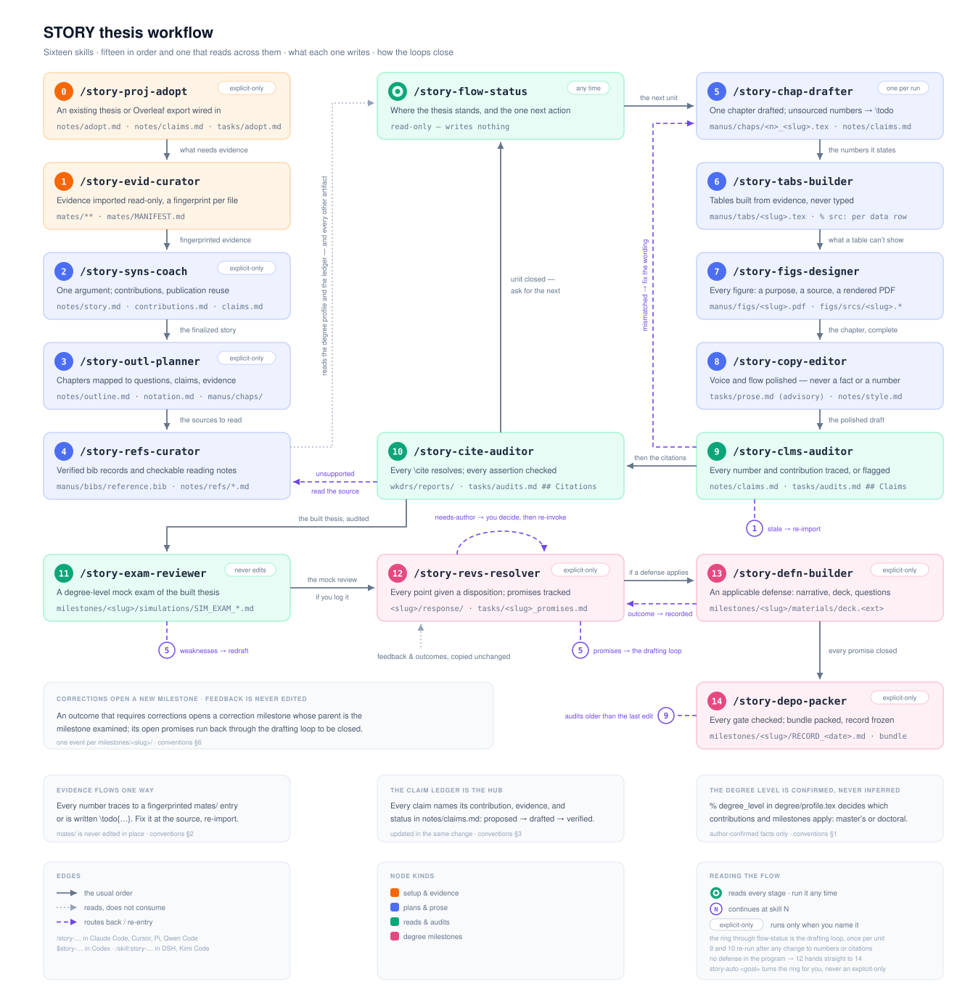

STORY
Systematic Toolchain for Organizing Research over Years
A STAR takes the STAGE to tell a STORY.
STARConducts research and produces evidence.
STAGETurns one contribution into a paper.
STORYSynthesizes years of work into a dissertation.
One repository, one dissertation
STORY keeps the manuscript, fingerprinted evidence, doctoral contributions, publication reuse, institutional requirements, committee feedback, defense materials, corrections, and deposit record in explicit, reviewable locations.
From evidence to degree

Start
git clone https://github.com/wanghao9610/STORY.git my-dissertation
cd my-dissertation
cp .env.example .env
bash execs/run.sh
bash execs/scpts/lint.shThe generic template compiles immediately. Institutional templates and degree rules enter only as author-confirmed facts under degree/.